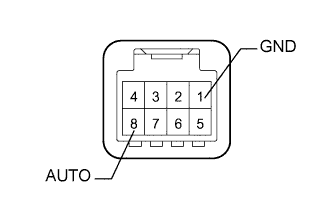

СИСТЕМА УПРАВЛЕНИЯ ЭЛЕКТРИЧЕСКИМИ СТЕКЛОПОДЪЕМНИКАМИ > Функция автоматического подъема / опускания электрического стеклоподъемника левой задней двери не приводится в действие с помощью переключателя электрического стеклоподъемника левой задней двери |
| 1.ПРОВЕРЬТЕ DTC |
Сбросьте коды DTC (Нажмите здесь).
Проверьте коды DTC (Нажмите здесь).
| Результат | Следующий шаг |
| DTC не выводится | А |
| DTC B2311 выводится | B |
| DTC B2312 выводится | C |
| DTC B2313 выводится | D |
|
| ||||
|
| ||||
|
| ||||
| А | |
| 2.ПРОВЕРЬТЕ ФУНКЦИЮ РУЧНОГО ПОДЪЕМА/ОПУСКАНИЯ (ПЕРЕКЛЮЧАТЕЛЬ ЭЛЕКТРИЧЕСКОГО СТЕКЛОПОДЪЕМНИКА ЛЕВОЙ ЗАДНЕЙ ДВЕРИ) |
Убедитесь, что с помощью переключателя стеклоподъемника задней двери можно управлять электродвигателем стеклоподъемника задней двери, используя функцию ручного подъема/опускания (Нажмите здесь).
|
| ||||
| OK | |
| 3.СНИМИТЕ ПОКАЗАНИЯ ПОРТАТИВНОГО ДИАГНОСТИЧЕСКОГО ПРИБОРА (ПЕРЕКЛЮЧАТЕЛЬ ЭЛЕКТРИЧЕСКОГО СТЕКЛОПОДЪЕМНИКА ЗАДНЕЙ ДВЕРИ) |
В режиме Data List проверьте работоспособность электрического стеклоподъемника задней двери (Нажмите здесь).
| Информация на дисплее прибора | Измеряемая величина / диапазон измерения | Нормальное состояние | Замечание по диагностике |
| RL Door P/W Auto SW | Сигнал автоматического подъема/опускания электрического стеклоподъемника левой задней двери / ON (ВКЛ) или OFF (ВЫКЛ) | ON (ВКЛ): Переключатель автоматического подъема/опускания электрического стеклоподъемника левой задней двери задействован OFF (ВЫКЛ): Переключатель электрического стеклоподъемника левой задней двери не задействован | - |
|
| ||||
| OK | ||
| ||
| 4.ПРОВЕРЬТЕ ПЕРЕКЛЮЧАТЕЛЬ ЭЛЕКТРИЧЕСКОГО СТЕКЛОПОДЪЕМНИКА ЛЕВОЙ ЗАДНЕЙ ДВЕРИ |
|  |
Снимите переключатель электрического стеклоподъемника задней двери (Нажмите здесь).
Измерьте сопротивление в соответствии со значениями, приведенными в таблице ниже.
| Контакты для подключения диагностического прибора | Положение переключателя | Заданные условия |
| 8 (AUTO) - 1 (GND) | Автоматический подъем/опускание | Менее 1 Ом |
| 8 (AUTO) - 1 (GND) | Не приведен в действие | 10 кОм или более |
|
| ||||
| OK | |
| 5.ПРОВЕРЬТЕ ЖГУТ ПРОВОДОВ И РАЗЪЕМ (ПЕРЕКЛЮЧАТЕЛЬ ЭЛЕКТРИЧЕСКОГО СТЕКЛОПОДЪЕМНИКА ЛЕВОЙ ЗАДНЕЙ ДВЕРИ - ЭЛЕКТРОДВИГАТЕЛЬ СТЕКЛОПОДЪЕМНИКА ЛЕВОЙ ЗАДНЕЙ ДВЕРИ И МАССА) |
Отсоедините разъем M2 переключателя электрического стеклоподъемника задней двери.
Отсоедините разъем M4 электродвигателя стеклоподъемника.
Измерьте сопротивление в соответствии со значениями, приведенными в таблице ниже.
| Контакты для подключения диагностического прибора | Условие | Заданные условия |
| M2-8 (AUTO) - M4-4 (AUTO) | Всегда | Менее 1 Ом |
| M2 (GND) - масса | Всегда | Менее 1 Ом |
| M2-8 (AUTO) - масса | Всегда | 10 кОм или более |
|
| ||||
| OK | ||
| ||